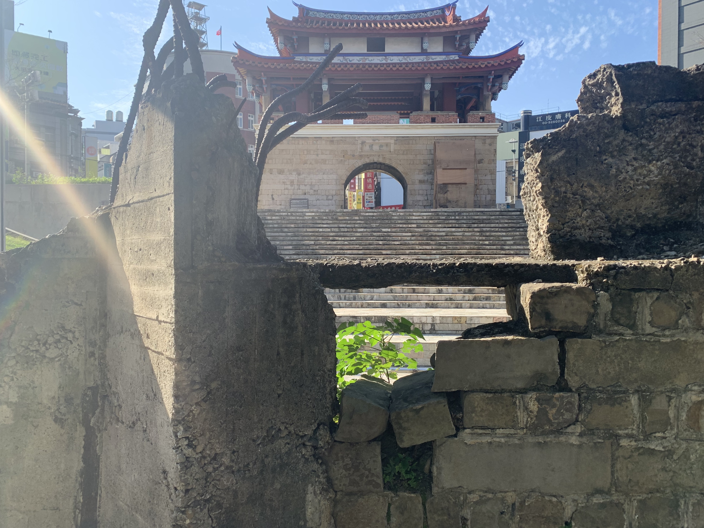
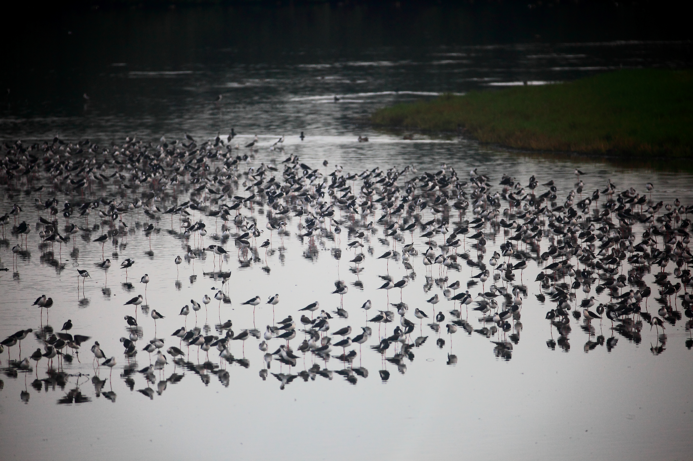
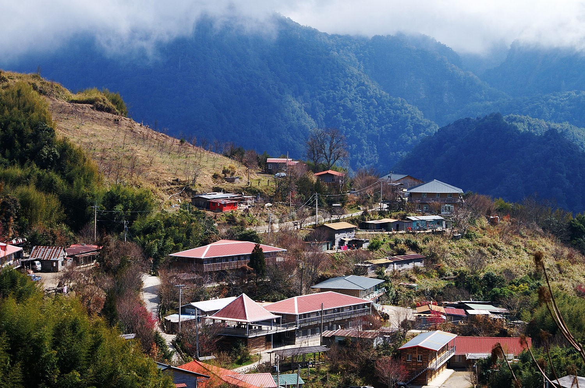
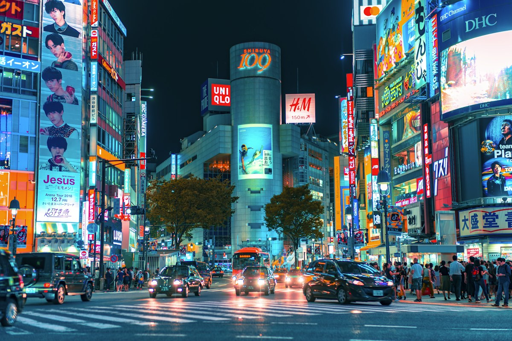
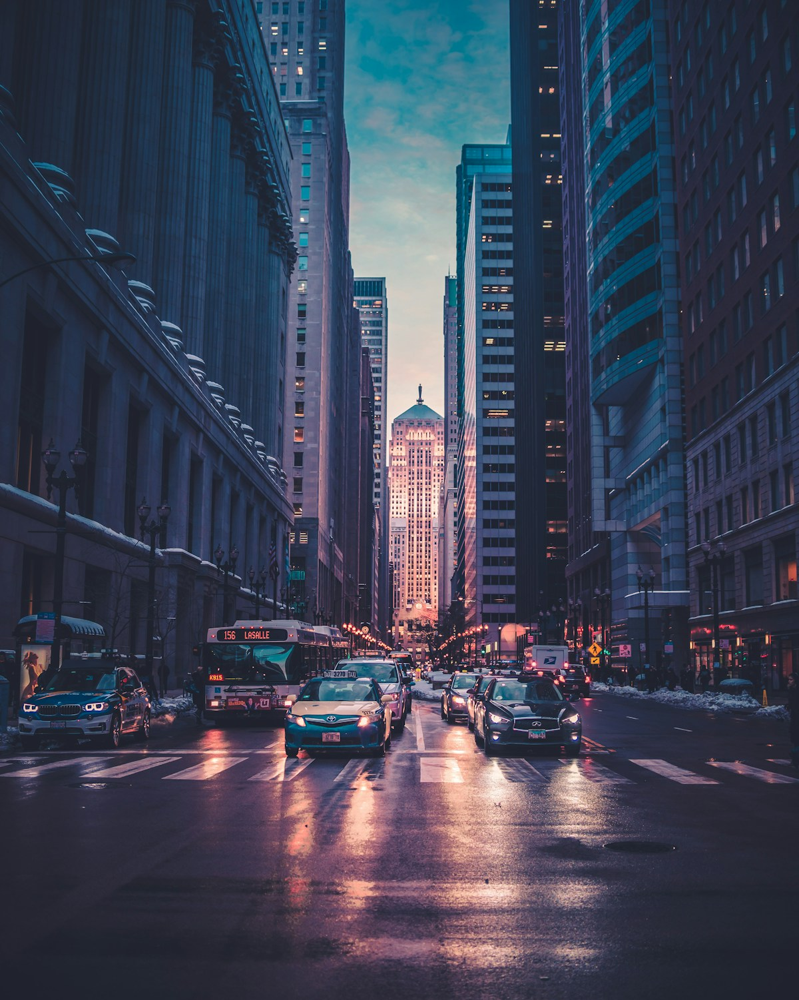

01 / 08

【 迎曦門 】
迎曦古城 ‧ 歷史風華
築城二百年，新竹璀璨的文化地標與歷史記憶

【 香山濕地 】
香山濕地 ‧ 潮間生態
漫步賞蟹步道，感受大海與夕陽交織的自然樂章

【 司馬庫斯 】
司馬庫斯 ‧ 黑色部落
霧林深處的千年巨木，上帝留給風城最純淨的仙境
【 17公里海岸線 】
十七公里海岸 ‧ 追風巡禮
騎行於綿延海岸線，擁抱九降風與蔚藍海天
【 尖石群山 】
尖石群山 ‧ 雲霧繚繞
山嵐與壯麗峽谷交錯，走進新竹後花園的靜謐秘境
【 香山落日 】
香山落日 ‧ 晚霞餘暉
金黃餘暉灑落海面，捕捉風城最動人的夕陽時刻

【 歷史古蹟 】
百年信仰 ‧ 人文風情
香火鼎盛的新竹城隍廟，承載道地美食與世代故事

【 璀璨風城 】
科技與古都 ‧ 璀璨夜色
融合科技脈動與古都底蘊，迎向明亮繁華的夜色